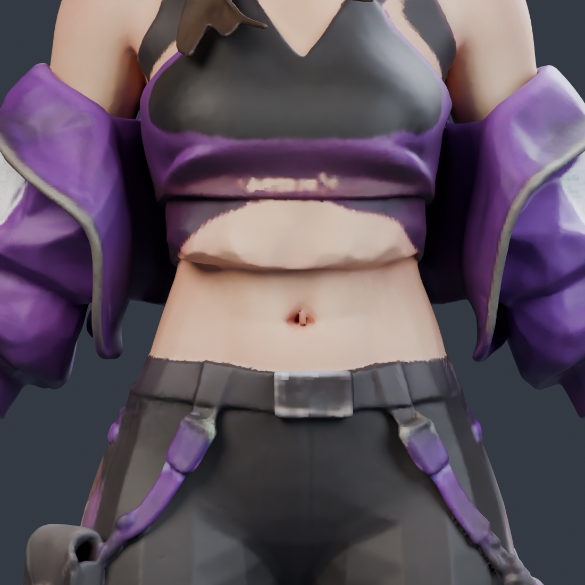
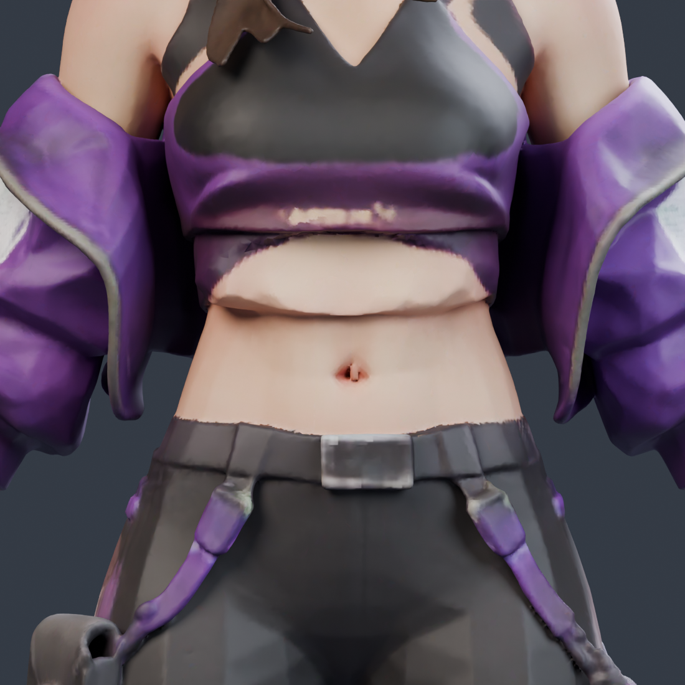
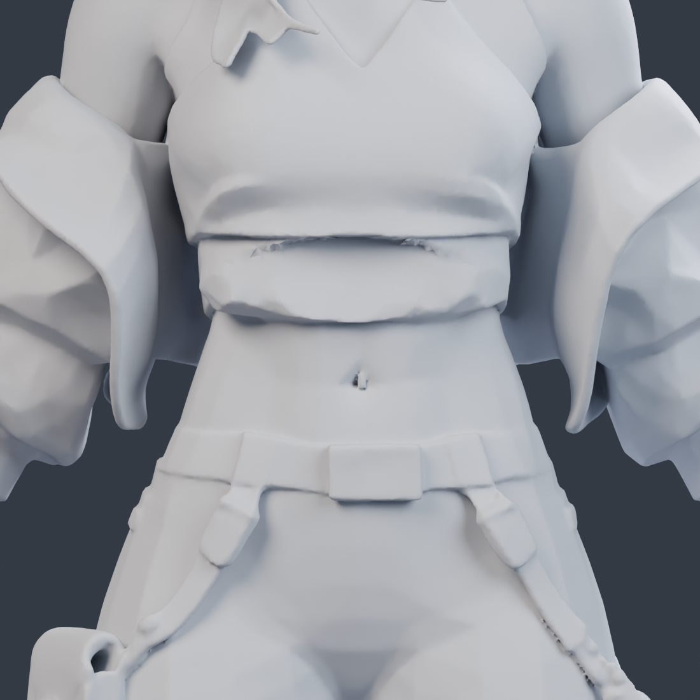

Phase 2.1 · Checkpoint 1 Critical Correction
NYRA Candidate A — Sub-Bra Protruding Shelf Removal
Surgical removal of the abnormal horizontal shelf protruding directly underneath the sports bra, with 100% preservation of sports bra, waistband, belt, navel, and original textures.
Targeted Shelf ROI
Z: 1.215m – 1.282m
Sub-bra to upper midriff
Shelf Vertices Adjusted
3,520 (0.49%)
Strictly sub-bra shelf
Max Protrusion Removed
16.46 mm
Level with abdominal wall
Outside ROI Shift
0.0000 mm
Zero shift on rest of mesh
Waistband / Belt Preservation
100% Bit-Exact
0 pixels changed
Texture Contamination
0 Texels
Original textures intact
1. Textured Abdomen Close-Up (Cycles AgX, Identical Studio Lighting)


2. Clay Abdomen Close-Up (Pure Geometry Verification)


Deliverables & Checkpoint Verification
- Editable Master:
recovery/nyra/restoration/checkpoint-1/nyra-restoration-checkpoint1.blend - Exported GLB:
recovery/nyra/restoration/checkpoint-1/nyra-a-restored.glb - Targeted Script:
scripts/restore_candidate_a_checkpoint1.py - Metrics & Verification:
recovery/nyra/restoration/checkpoint-1/mesh-statistics.json
Stopped for human visual approval.